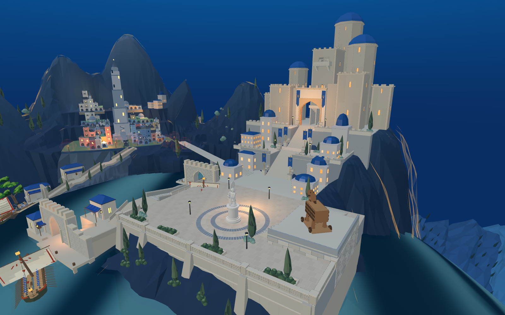
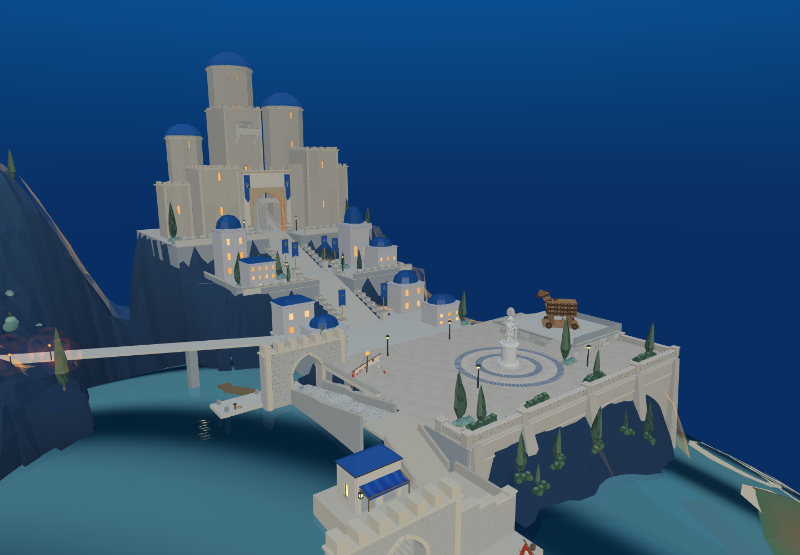
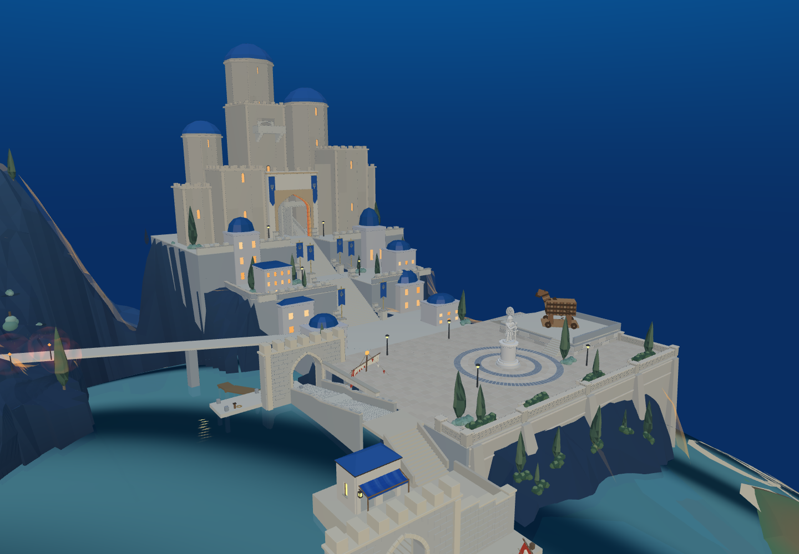
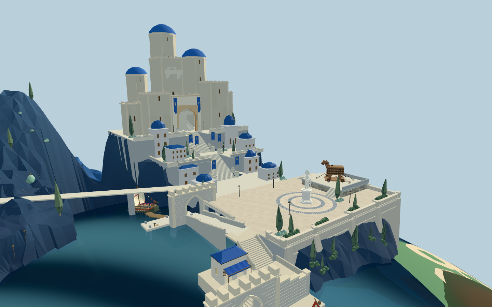
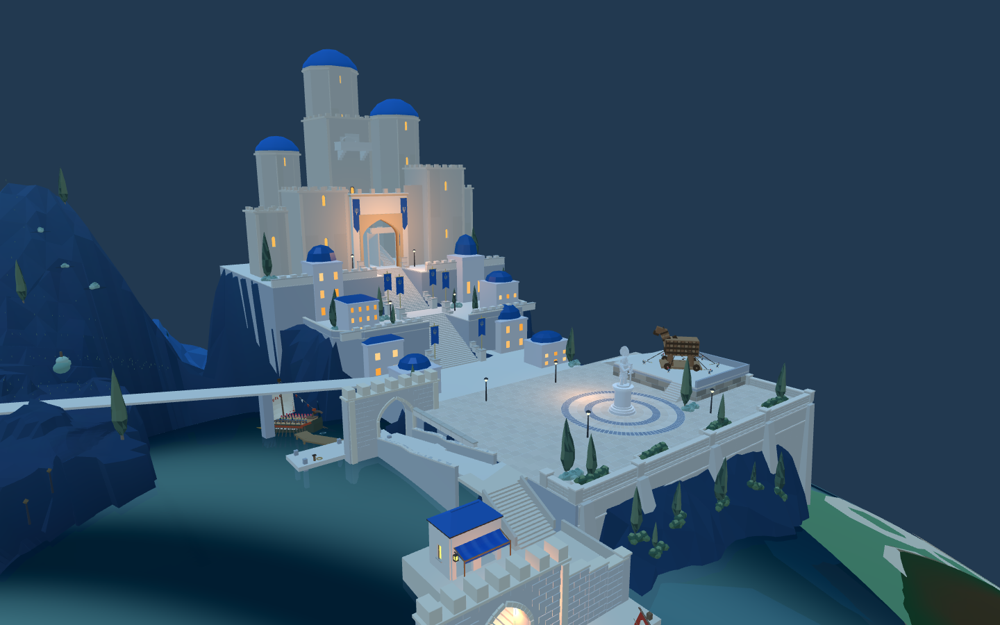

中层前移6米，主堡与塔内通路前移12米。真实短剑兵广场至顶层559段通过；网页283支撑点通过。本轮不是整体复刻完成。

固定新城局部机位：(96,31,117)，看向(60,13,61)，视场59度。用来持续检查右侧主堡、前景雕像与木马；仍非精确图像配准。





塔群比例细长、岩台边缘尖长、平台与山体过渡生硬，绿植与暖光不足。目标视角尚未精确对齐。旧桥阻挡及完整攻城未通过，不计为本轮交付。